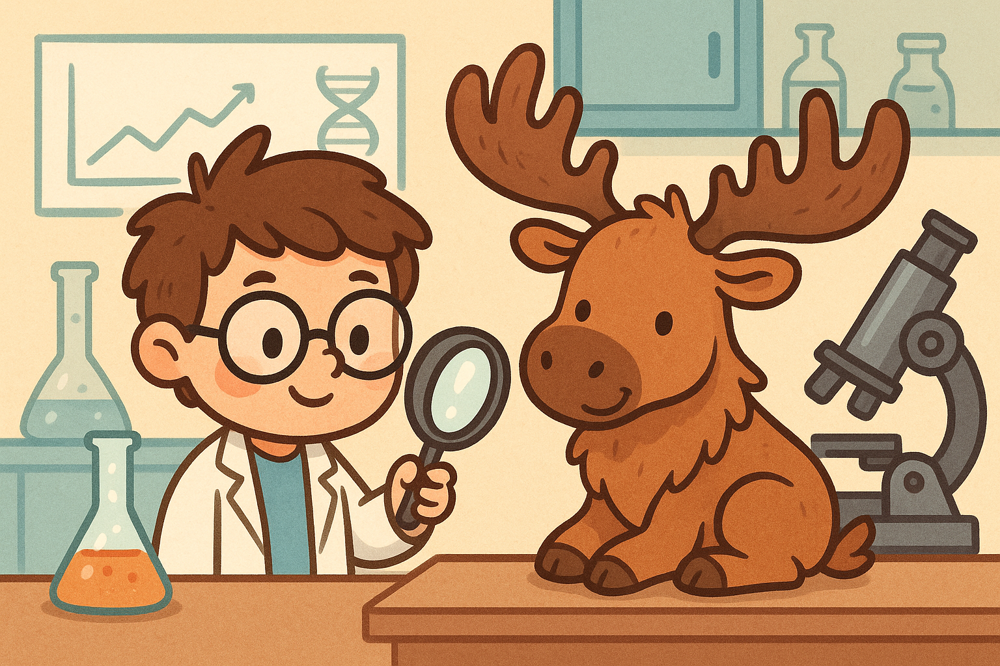
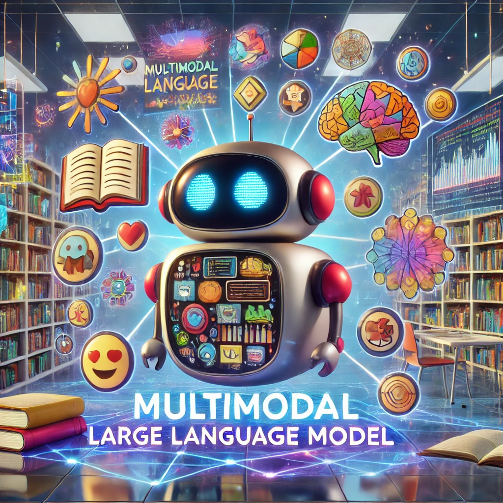

Simon Wang
who am I?
Hello! I'm Simon!
I just recently completed my Master's in Computer Science at UMD (May 2025), and I'm so excited to use what I've learned over the past few years to make a real impact!
do I have interests?
Aside from creating AI tools, studying deep learning, and developing webpages (like this one), in my free time I love to...
- Create art | digital illustration & oil painting are my faves!
- Design & 3D print cool things w/ my Bambu Labs P1S!
- Run | as a former track athlete that doesn't run enough anymore...
- Play video games | Minecraft, Apex Legends, Genshin, and more
pursuing research interests in:
Generative AI
I recently got my Master's in Computer Science from the University of Maryland (UMD), with a focus on Applied AI/ML. I love applying what I study to create impactful tools that show the amazing potential of technology to engage and assist everyone! Check out the links below and look through this site to find out more. Thanks :)
My Skills
Programming languages, AI/ML tools, and software I've picked up over the years!
Project Highlights
Check out some of my project highlights! See my Projects page and my GitHub for complete details and code.
Creating Multi-Agent Systems with SmolAgents - Huggingface Course
July, 2025

AI generated using gpt-4o
I recently successfully completed the full certification from the Hugging Face AI Agents Course. As the final project of this course, I created a multi-agent system using SmolAgents to solve complex agentic reasoning problems from the GAIA dataset. Ultimately, through extensive system design, testing, and prompt engineering, I was able to achieve a 55% success rate on the required subset of the GAIA dataset (passing was 30%)!
Read more!Wildlife Analyzer - An MLOps Dashboard for Wildlife Observations
June, 2025

AI generated using gpt-4o
An MLOps-style pipeline and dashboard for analyzing wildlife observations. This project leverages the iNaturalist API, and incorporates a variety of tools and techniques including LLMs, clustering, data visualization, and logging/monitoring via MLflow and AWS S3.
Read more!Understanding Agentic AI Systems for Data Analysis: Techniques, Components, and Considerations
May, 2025
AI generated using gpt-4o
A survey paper exploring state of the art agentic AI systems for data analysis. In this work I also provide an overview of the most common LLM-based approaches to general workflows, and also propose a component framework for understanding agentic AI systems inspired by the The Project Management Lifecycle.
Read more!MMO - Multi-modal Multi-agent Organization & Robust Benchmarking
December 18, 2024

AI generated using DALL-E
Course research project for CMSC848K - Multimodal Foundation Models. Developed a multi-modal multi-agent system and investigated how to improve multimodal large language model (MLLM) benchmarking.
Read more!Monte Carlo Rendering and Disney BRDF in PyTorch
December 14, 2024

Two spheres with Disney style shading!
An implementation of Monte Carlo path tracing and Disney "principled" BRDF in PyTorch. An extension of an assignment codebase from CMSC740 - Advanced Graphics course. Implemented advanced computer graphics concepts such as Monte Carlo integration, neural radiosity, and multiple importance sampling. As a final project, I also implemented the Disney shading system in the existing renderer with fine-grained control of object appearance using 10 parameters.
Read more!Personalized RAG Quiz System using OpenAI Structured Outputs
May, 2024
AI generated using DALL-E
A demonstration of using retrieval augmented generation and structured outputs through OpenAI API. Exploring how AI can be used to help us learn, automatically creating and testing us on custom uploaded knowledge from documents and webpages.
Read more!Improving Control and Consistency of Diffusion-Generated Video
May 2, 2024

Selected frames from a video I generated
Semester-long course project created for CMSC720: Foundations of Deep Learning. Investigated state of the art diffusion-based video generation methods, and experimented with various approaches to improving their quality in terms of consistency and controllability. Wrote and submitted a NEURIPS format paper for a mock-conference within our class.
Read more!Virtual Classroom
May 17, 2024

A scene from our VR vector math lecture
This is a virtual reality (VR) project created in the Unity game engine throughout the Spring 2024 semester for the course CMSC838C: Advances in XR. I led a group of 5 classmates to design a virtual classroom environment, and we conducted a user study to investigate the benefits of XR education over traditional remote learning mediums such as video.
Read more!